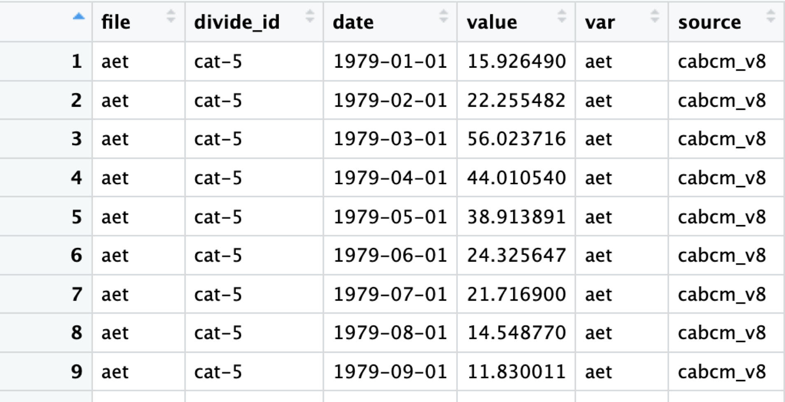

Note: As of 9/2/2024 the package is formatted to process CABCM and TerraClimate data. As NextGen data becomes available any adjustments that need be made to allow it to work within this flow will be made. Until that point, this document will refer to CABCM and Terra data with the implication that NextGen could be substituted for either at any point.
Set AWS Credentials
The first step will be to set AWS Credentials Globally so that you can access the data held in the tnc-dangermond bucket.
Define the Theme
Optional Set a common theme for all of your plots. If you want them to look like the examples here, you can use this code chunk:
theme_pers <-function (base_size = 7, base_family = ""){
theme(
line = element_line(colour = "black", size = 0.3, linetype = 1, lineend = "butt"),
rect = element_rect(fill = "white", colour = "black", size = 0.3, linetype = 1),
text = element_text(family = base_family, face = "plain", colour = "black", size = base_size, hjust = 0.5, vjust = 0.5, angle = 0, lineheight = 0.9),
axis.text = element_text(size = rel(0.8)),
axis.line = element_blank(),
axis.text.x = element_text(vjust = 1),
axis.text.y = element_text(hjust = 1),
axis.ticks = element_line(),
axis.title.x = element_text(),
axis.title.y = element_text(angle = 90),
axis.ticks.length = unit(1, "mm"),
axis.ticks.margin = unit(1, "mm"),
legend.background = element_rect(colour = NA),
legend.spacing = unit(-0.5, "lines"),
legend.key = element_blank(),
legend.key.size = unit(1.2, "lines"),
legend.key.height = NULL,
legend.key.width = NULL,
legend.text = element_text(size = rel(0.8)),
legend.text.align = NULL,
legend.title = element_text(size = rel(0.8), hjust = 0),
legend.title.align = 0.5,
legend.position = "right",
legend.direction = NULL,
legend.justification = "center",
legend.box = NULL,
panel.background = element_rect(colour = NA),
panel.border = element_rect(fill = NA),
panel.grid.major = element_line(colour = "grey90", size = 0.2),
panel.grid.minor = element_blank(),
panel.margin = unit(0.25, "lines"),
panel.margin.x = NULL,
panel.margin.y = NULL,
strip.background = element_blank(),
strip.text = element_text(face="bold"),
strip.text.x = element_text(face="bold"),
strip.text.y = element_text(face="bold", angle = -90),
plot.background = element_rect(colour = "white"),
plot.title = element_text(size = rel(1.2)),
plot.margin=unit(rep(1, 4), "mm"),
complete = TRUE)
}

Pull Model Data
The data pulls assume access to the tnc-dangermond bucket and its folders which contain the updated model data for the Dangermond Preserve.
Pull CABCM Data
#new_cabcm_data <- CABCMParquetRead()The CABCMParquetRead() function lists all Parquet files in the specified subfolder within the base folder, it then reads each parquet file into a data frame, stores them in a list, and combines all data frames in the list into a single data frame with an additional column `file` indicating the file from which each row was read.
The end product should look like this:

Pull TerraClimate Data
#new_terraclim_data <- TerraParquetRead()The TerraClimParquetRead function performs the same steps as the CABCMParquetRead() function with the added step that it transforms the `var` column to standardize variable names, changing “q” to “run” and “soil” to “str”
Clean Model Data
The above data has a variable, str, which represents soil moisture storage. To accurately balance the basin’s water budget, we need to convert this from total storage to the change in storage between two time steps.
model_clean() separates out the soil moisture storage “str” from the “var” field and calculates day to day change in storage before joining that data back into the primary dataset for analysis. The output is cabcm_delta_str or terra_delta_str.
#model_clean(new_cabcm_data)From this:
To this:

Process Model Data
What we have so far is great, but it isn’t accounting for error. If the input to our system is Precipitation, PPT, and the out puts are Actual Evapotranspiration, Stream Recharge, Runoff, and Change in Soil Moisture Storage, we can better balance our system by finding error with the following equation.
ERR = ppt - aet - rch - run - str
#result_cabcm <- process_model_data(cabcm_delta_str, NewDivides)The process_model_data() function does this and more.
It widens the dataframe, calculates the error for each timestamp,
assigns seasons based on month, calculates average error per season, and
the percent error against PPT. It then joins the seasonal data with the
NewDivides dataset to create a spatial dataframe, which is
split into four seasonal datasets. The final output is a list containing
seasonal data that can be used for generating Percent Error Plots based
on the season.

In addition to prepping the data for Seasonal Error plot, the function assigns the widened data, such as “cabcm_data_wide” to the global environment to be used in the balance_data() function below and create our water balance plots.
Plot Seasons
plot_seasons() generates standardized plots for based on the above
seasonal data. The plots visualize the percent error across different
spatial features for a given season. This function is designed to be
used within the GridSeasons() function to arrange the plots
in a grid layout.
You can customize it as suits you, but I have found this format to be very appealing visually.
PlotSeason <- function(SeasonData, season_name) {
ggplot() +
annotation_map_tile(type = "osm", zoomin = 1) +
coord_sf(crs = st_crs(26910)) +
ggtitle(glue("{season_name}")) + # Use the season name for the title
geom_sf(data = filter(SeasonData, type != "coastal"), color = "grey", aes(fill = percent_error)) +
labs(fill = "Percent Error") +
scale_fill_gradient(low = "white", high = "red4") +
theme(axis.text.x = element_text(angle = 45, hjust = 1),
plot.title = element_text(face = "bold"),
plot.subtitle = element_text(hjust = 0.5))
}Seasons Plot
#SeasonsPlot <- GridSeasons(result_cabcm)GridSeasons() arranges and formats seasonal plots generated by the
PlotSeason function into a 2x2 grid layout. It uses the
output from process_model_data() and customizes the plot
titles and captions based on the data source, be it CABCM, Terra, or
(pending) NextGen